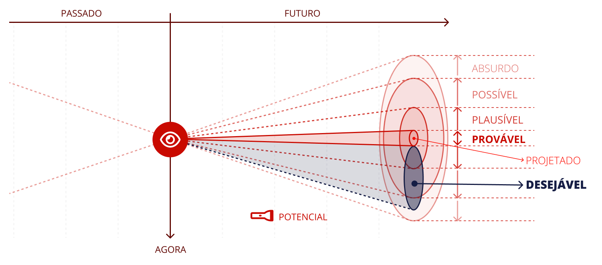

Mapeamento de sinais fracos
Identificação de indícios iniciais, ainda pouco visíveis, de mudanças que podem se tornar relevantes no futuro.
Curso de Administração · Disciplina Estudos de Futuros
Todo gestor toma decisões olhando, ao mesmo tempo, para dois lugares: o presente, onde estão os dados e os problemas concretos, e o futuro, que é a razão de ser de qualquer decisão. Os Estudos de Futuros (Futures Studies) nasceram para preencher a lacuna que a formação em Administração costuma deixar em aberto: a capacidade de pensar sobre múltiplos futuros possíveis para decidir melhor hoje.
Use o menu ao lado para navegar entre as seções. O conteúdo acompanha a rolagem da página.
01 — Fundamentos
Estudos de Futuros é o campo interdisciplinar dedicado à investigação sistemática de futuros possíveis, prováveis e preferíveis, com o objetivo de qualificar a tomada de decisão no presente. Trata-se de um termo guarda-chuva para estudos que analisam tendências buscando antecipar eventos ou contextos prováveis, possíveis ou preferíveis — sem pretender prever o futuro com exatidão, mas sim compreender o que provavelmente vai continuar e o que pode mudar de forma plausível.
É importante marcar bem essa fronteira desde o início: Estudos de Futuros não é previsão. Previsão pressupõe que existe um único resultado correto a ser descoberto, como se o futuro já estivesse escrito e bastasse ter os dados certos para lê-lo. Os Estudos de Futuros partem do princípio oposto: o futuro é aberto, indeterminado e construído por decisões humanas — o que significa que ele não pode ser previsto com certeza, mas pode ser explorado, mapeado e, em alguma medida, influenciado.
Em vez de perguntar "o que vai acontecer?", o profissional formado em Estudos de Futuros pergunta "quais futuros são possíveis, o que os tornaria mais ou menos prováveis, e qual deles eu prefiro construir?"
Saiba mais: Futurologia (Wikipédia) · 5 perguntas para Peter Bishop, futurista
02 — Contexto Histórico
Os Estudos de Futuros, como campo estruturado, nasceram no período pós-Segunda Guerra Mundial, quando governos e organizações passaram a sentir necessidade de métodos mais rigorosos para lidar com a incerteza estratégica — sobretudo no contexto da Guerra Fria. Três frentes se destacam nesse nascimento: os Estados Unidos, com a RAND Corporation; a França, com a tradição de "La Prospective"; e a consolidação acadêmica internacional que se seguiu.
| 1945–48 | A RAND Corporation é criada nos EUA. Ali, o físico e matemático Herman Kahn desenvolve o método de cenários como ferramenta de análise estratégica. |
| 1957 | O filósofo francês Gaston Berger recupera o termo prospective e funda um centro de estudos dedicado a pensar o futuro como construção coletiva. |
| 1961–67 | Kahn deixa a RAND para fundar o Hudson Institute e publica, com Anthony Wiener, The Year 2000: A Framework for Speculation on the Next Thirty-Three Years, uma das obras fundadoras do campo. |
| 1967 | Institucionalização do diálogo global sobre o tema com a criação da World Futures Studies Federation (WFSF). |
| 1969 | Primeiro programa de doutorado em Estudos do Futuro, criado na Universidade de Massachusetts. |
| 1979 | No Brasil, Henrique Rattner publica Estudos do futuro: introdução à antecipação tecnológica e social, pela Fundação Getulio Vargas — marco de referência nacional. |
| 2025 | Criação da Associação Brasileira de Futuristas (ABFPro), consolidando uma comunidade profissional organizada no país. |
Saiba mais: A Blueprint of the History of Scenarios · Mas, afinal, o que é um futurista?
03 — Aplicação Gerencial
A incerteza não é uma condição temporária do ambiente de negócios — é uma condição permanente. Mudanças tecnológicas, geopolíticas, climáticas e sociais se sobrepõem em ritmos cada vez mais difíceis de acompanhar. Nesse cenário, empresas globais como PwC, H&M e Chanel têm criado laboratórios próprios de prototipagem de futuros, justamente porque perceberam que decisões baseadas apenas no curto prazo perdem competitividade diante de mudanças estruturais que levam cinco, dez ou vinte anos para amadurecer.
Evitar a miopia do curto-prazismo é o principal benefício prático do campo — um risco tanto para os negócios quanto para a sociedade como um todo. — Martha Gabriel, futurista brasileira
Para um administrador, isso significa que os Estudos de Futuros não são um exercício acadêmico distante da prática de gestão. São, na verdade, um instrumento de redução de risco estratégico: quanto mais cedo uma organização identifica sinais de mudança, maior sua margem de manobra para se adaptar — ou para transformar a mudança em vantagem competitiva.
Saiba mais: Quem desenha o amanhã: a ascensão dos futuristas nas empresas · Futurismo: os futuros de hoje não são mais como os de antigamente
04 — Conceito Central
Se há um único conceito que você deve levar desta unidade, é este: não existe o futuro, existem futuros. Essa ideia é o que diferencia os Estudos de Futuros de qualquer forma de previsão determinística — não existe uma trajetória única e linear a partir do presente, existem múltiplos futuros alternativos que podem ser estudados e, principalmente, projetados.
Na prática, isso significa que uma organização que planeja com base em um único cenário ("o mercado vai continuar crescendo 5% ao ano") está, na verdade, escolhendo — muitas vezes sem perceber — apenas um entre vários futuros possíveis, e ignorando os demais. Os Estudos de Futuros propõem o oposto: mapear deliberadamente um leque de futuros plausíveis, para que a estratégia da organização seja robusta o suficiente para funcionar em mais de um deles.
Saiba mais: Future Studies: por que desenhar futuros para seu negócio é estratégico?
05 — Modelo
O Cone de Futuros (Futures Cone) é o principal modelo visual do campo para representar a pluralidade de futuros. Sua origem remonta ao filósofo canadense Charles Taylor, que em 1990 descreveu um "cone de plausibilidade"; o modelo foi posteriormente ampliado por Hancock e Bezold, em 1994, e recebeu sua forma mais conhecida e didática nas mãos do físico e futurista australiano Joseph Voros.
O modelo parte de um ponto no presente e se expande, como um cone (ou uma luz de lanterna), à medida que avançamos no tempo — quanto mais distante o horizonte temporal, maior o leque de futuros possíveis.

Leia o conteúdo completo sobre Cone de Futuros Ler artigo completo
Vale destacar que essas categorias não são compartimentos estanques: elas se sobrepõem, e um mesmo evento pode ser, ao mesmo tempo, pouco provável e altamente preferível — o que é justamente o tipo de tensão que a análise estratégica de futuros ajuda a tornar visível.
Saiba mais: Futures Cone: what it is and its uses · Cone de futuros — Glossário de Prospetiva
06 — Comparação
É comum confundir Estudos de Futuros com o planejamento estratégico convencional, mas os dois têm propósitos distintos. O planejamento estratégico tradicional geralmente parte de uma projeção — normalmente baseada na extrapolação de dados históricos — e organiza metas e recursos em torno dela. Os Estudos de Futuros, por outro lado, começam questionando a própria projeção.
Essa é a diferença central: o planejamento estratégico tradicional tende a operar dentro de um único futuro assumido como certo (muitas vezes chamado, na literatura do campo, de "futuro oficial"); os Estudos de Futuros trabalham deliberadamente para expor e questionar esse futuro oficial, ampliando o espaço de possibilidades antes de decidir.
Saiba mais: Future Studies: por que desenhar futuros para seu negócio é estratégico?
07 — Panorama
Esta unidade é introdutória, e as ferramentas específicas de Estudos de Futuros serão aprofundadas nas próximas unidades da disciplina. Por ora, vale conhecer o panorama geral do que está por vir.
Identificação de indícios iniciais, ainda pouco visíveis, de mudanças que podem se tornar relevantes no futuro.
Análise de padrões de mudança já em curso e sua possível trajetória.
Elaboração de narrativas estruturadas sobre diferentes futuros plausíveis, usadas para testar a robustez de estratégias.
Processo organizacional que integra as ferramentas acima à tomada de decisão da empresa.
08 — Prática Empresarial
Para tornar tudo isso concreto, vale observar como os conceitos desta unidade aparecem em diferentes setores — e, em seguida, ir até o caso mais citado da literatura de Estudos de Futuros aplicados à gestão: o da Shell.
Uma rede de lojas físicas que, ao mapear sinais fracos de mudança no comportamento do consumidor (crescimento do comércio eletrônico, mudanças em hábitos de pagamento), constrói cenários alternativos para os próximos cinco anos, em vez de projetar apenas a continuidade do modelo atual.
Um banco que utiliza o Cone de Futuros para diferenciar o cenário "provável" de regulação do setor daquele que seria "preferível" do ponto de vista do próprio banco, orientando sua atuação junto a órgãos reguladores.
Uma área de RH que, em vez de planejar treinamentos apenas com base nas competências atuais mais demandadas, explora futuros plausíveis do mercado de trabalho para antecipar competências que ainda não são valorizadas, mas podem vir a ser.
Na virada dos anos 1960 para os 1970, uma equipe de planejamento da Royal Dutch Shell, liderada por Pierre Wack e Ted Newland, passou a aplicar sistematicamente o método de cenários — inspirado nos trabalhos pioneiros de Herman Kahn — para pensar o futuro do mercado de petróleo.
Por volta de 1971–1972, a equipe identificou um conjunto de forças estruturais que a maior parte dos executivos do setor petrolífero ignorava: os países da OPEP estavam ganhando confiança política, alguns produtores já haviam demonstrado capacidade de restringir a oferta para elevar preços, e os Estados Unidos se tornavam, pela primeira vez, importadores líquidos de petróleo. A partir desses sinais, a equipe de Wack construiu cenários nos quais os países produtores passariam a usar o petróleo como instrumento político e econômico — um cenário considerado, à época, pouco convencional pela alta liderança da empresa.
O objetivo do exercício de cenários nunca foi prever o futuro com exatidão, mas sim modificar o "modelo mental" dos tomadores de decisão — isto é, preparar a organização para reconhecer e agir diante de uma mudança, mesmo sem saber exatamente quando ela ocorreria. — Pierre Wack
Quando a crise do petróleo de fato eclodiu, em outubro de 1973, após a formação de um embargo pela OPEP, a Shell foi a única grande petrolífera preparada para o choque. Enquanto concorrentes foram pegos de surpresa, a empresa avançou de uma posição modesta entre as "sete irmãs" do setor para se tornar uma das líderes globais do mercado de petróleo já na década seguinte.
Esse episódio é considerado um marco na história da aplicação empresarial dos Estudos de Futuros — não porque a Shell "acertou uma previsão", mas porque sua equipe de planejamento havia preparado a organização para múltiplos futuros, e não apenas para o mais óbvio.
Saiba mais: Case study: how Shell anticipated the 1973 oil crisis · Caso Shell e o planejamento de cenários · Pierre Wack (Wikipedia)
09 — Vídeo
"#18 Futuros Possíveis: Estudos de futuros nas empresas" — episódio do Podcast Lab de Tendências, uma conversa com o futurista e estrategista de negócios Demetrio Teodorov sobre a importância dos Estudos de Futuros nas empresas.
10 — Bibliografia